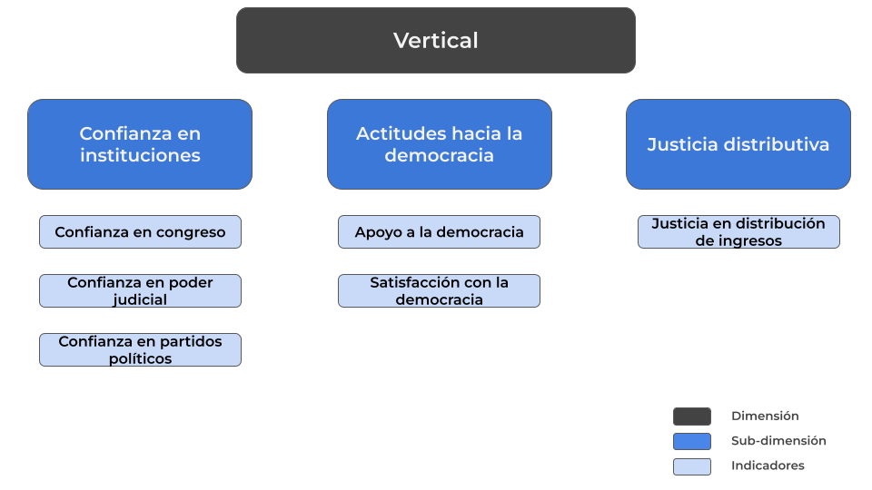
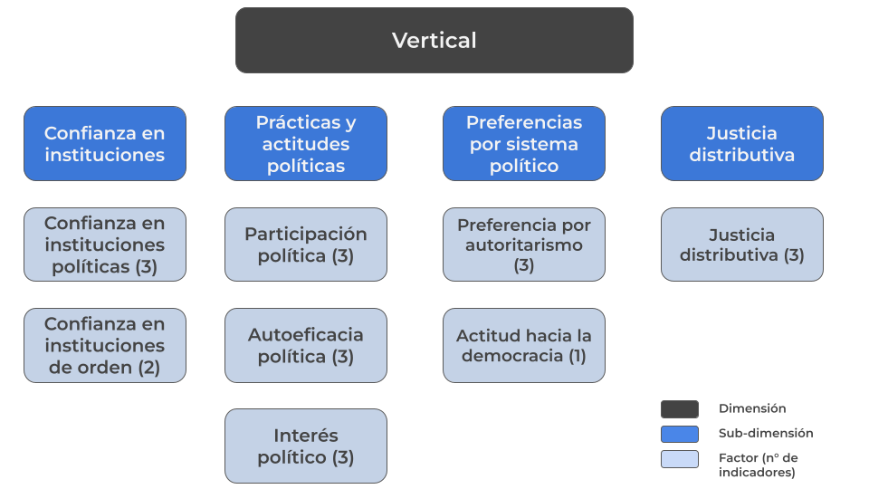
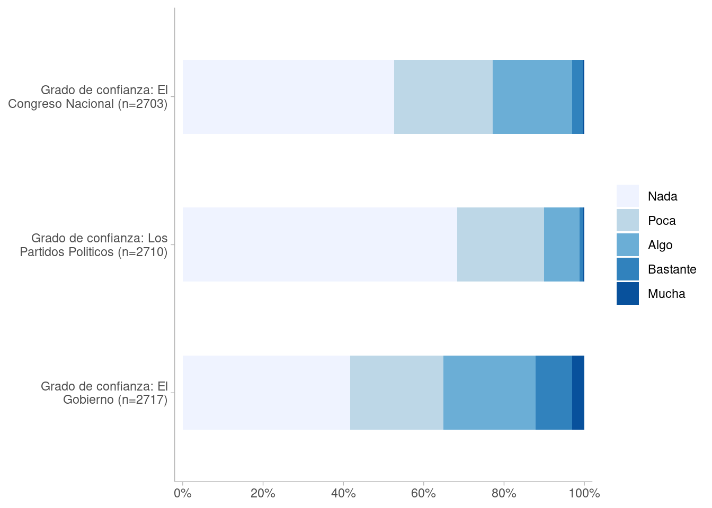
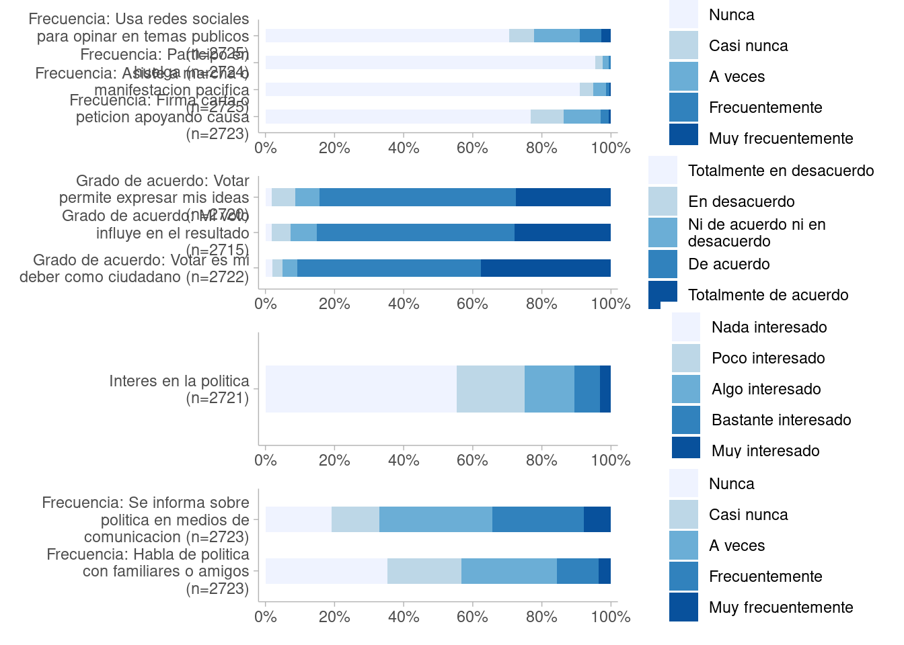
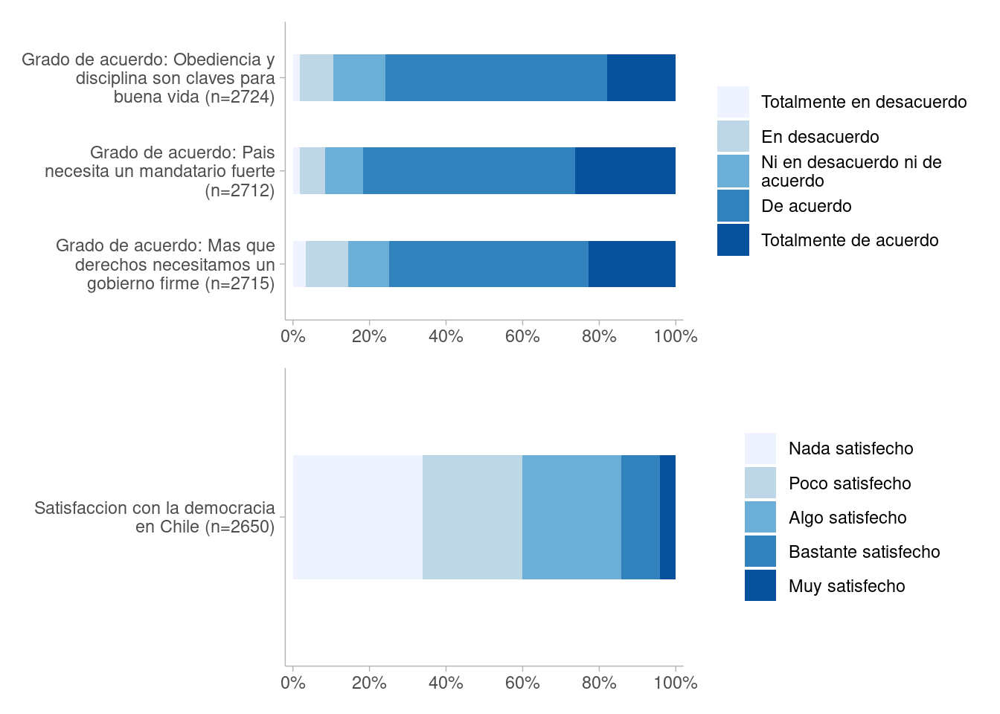
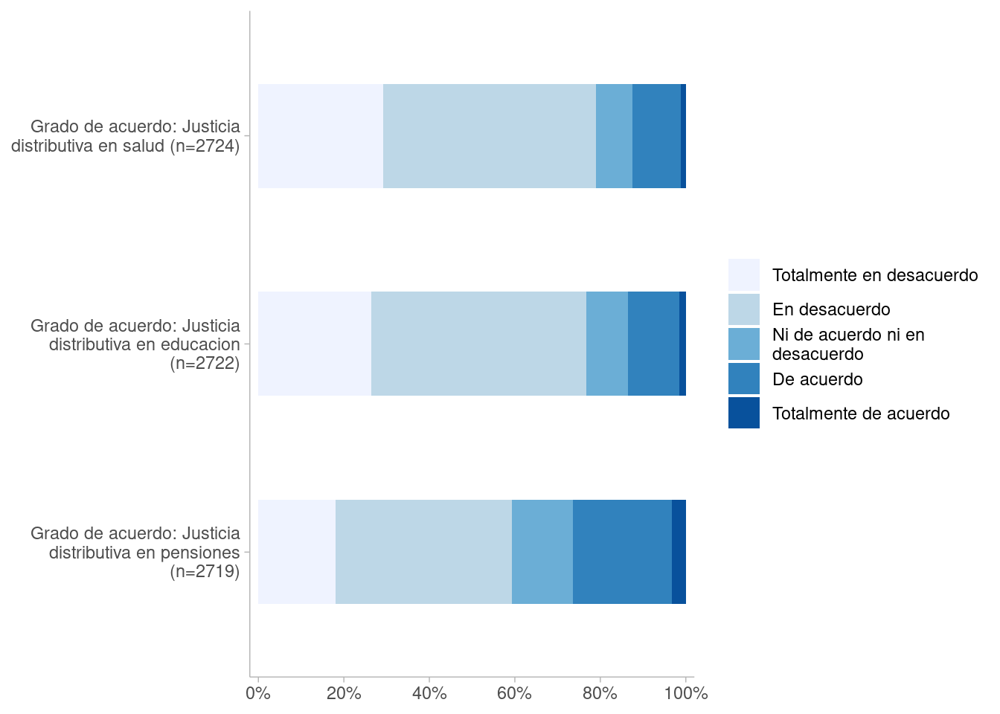
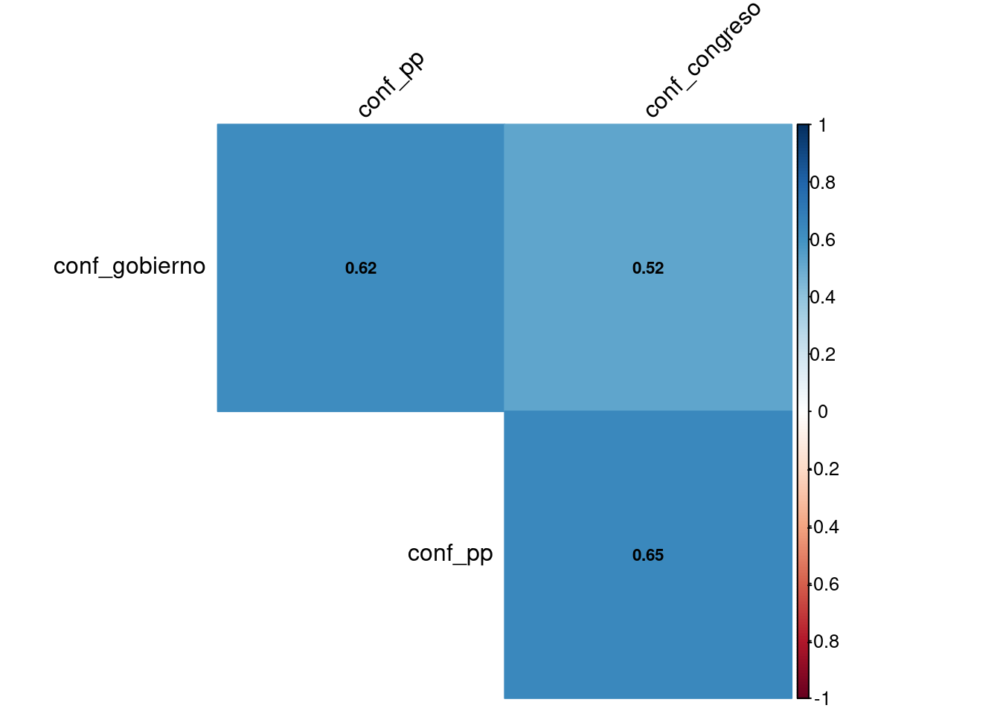
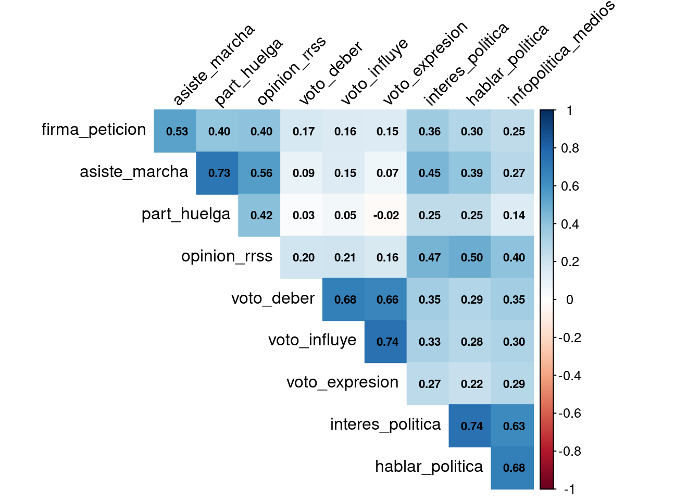
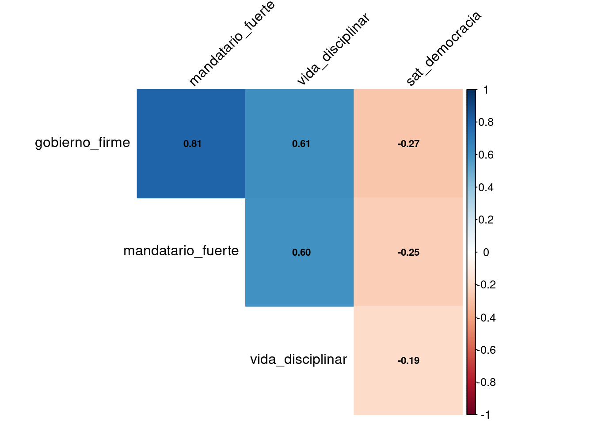
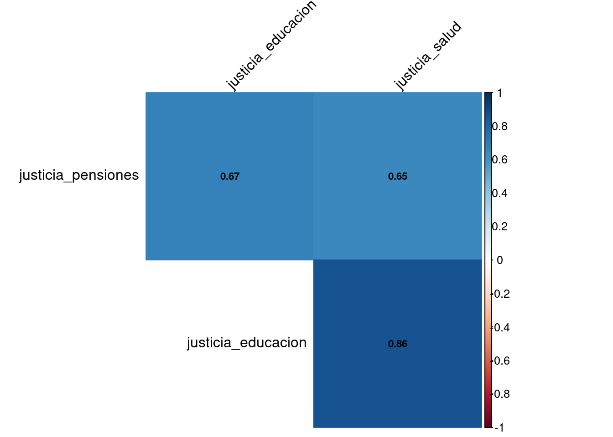

| Dimensión | Subdimensión | Indicador | Encabezado |
|---|---|---|---|
| Confianza en instituciones y satisfacción con la democracia | Confianza en instituciones | El gobierno | “Utilizando una escala donde 1 representa”Nada" y 5 “Mucha”, ¿podría decirme cuánto confía usted en cada una de las siguientes instituciones?” |
| Confianza en instituciones y satisfacción con la democracia | Confianza en instituciones | Los partidos políticos | “Utilizando una escala donde 1 representa”Nada" y 5 “Mucha”, ¿podría decirme cuánto confía usted en cada una de las siguientes instituciones?” |
| Confianza en instituciones y satisfacción con la democracia | Confianza en instituciones | Carabineros | “Utilizando una escala donde 1 representa”Nada" y 5 “Mucha”, ¿podría decirme cuánto confía usted en cada una de las siguientes instituciones?” |
| Confianza en instituciones y satisfacción con la democracia | Confianza en instituciones | Los sindicatos | “Utilizando una escala donde 1 representa”Nada" y 5 “Mucha”, ¿podría decirme cuánto confía usted en cada una de las siguientes instituciones?” |
| Confianza en instituciones y satisfacción con la democracia | Confianza en instituciones | El poder judicial | “Utilizando una escala donde 1 representa”Nada" y 5 “Mucha”, ¿podría decirme cuánto confía usted en cada una de las siguientes instituciones?” |
| Confianza en instituciones y satisfacción con la democracia | Confianza en instituciones | Las empresas privadas | “Utilizando una escala donde 1 representa”Nada" y 5 “Mucha”, ¿podría decirme cuánto confía usted en cada una de las siguientes instituciones?” |
| Confianza en instituciones y satisfacción con la democracia | Confianza en instituciones | El congreso nacional | “Utilizando una escala donde 1 representa”Nada" y 5 “Mucha”, ¿podría decirme cuánto confía usted en cada una de las siguientes instituciones?” |
| Confianza en instituciones y satisfacción con la democracia | Confianza en instituciones | El presidente de la república | “Utilizando una escala donde 1 representa”Nada" y 5 “Mucha”, ¿podría decirme cuánto confía usted en cada una de las siguientes instituciones?” |
| Confianza en instituciones y satisfacción con la democracia | Actitud hacia la democracia | ¿Cuán satisfecho o insatisfecho está usted con el funcionamiento de la democracia en Chile? | |
| Participación política | Participación ciudadana | Firmado una carta o una petición apoyando una causa | “Durante los últimos 12 meses, con cuánta frecuencia usted ha …” |
| Participación política | Participación ciudadana | Asistido a una marcha o manifestación pacífica | “Durante los últimos 12 meses, con cuánta frecuencia usted ha …” |
| Participación política | Participación ciudadana | Participado en una huelga | “Durante los últimos 12 meses, con cuánta frecuencia usted ha …” |
| Participación política | Participación ciudadana | Usado las redes sociales para expresar su opinión en temas público | “Durante los últimos 12 meses, con cuánta frecuencia usted ha …” |
| Participación política | Interés político | ¿Qué tan interesado está usted en la política? | |
| Participación política | Interés político | Habla de política con familiares o amigos | ¿Con qué frecuencia realiza usted las siguientes actividades? |
| Participación política | Interés político | Se informa activamente sobre política en medios tales como televisión, radios, diarios o internet | ¿Con qué frecuencia realiza usted las siguientes actividades? |
| Percepción de justicia (distributiva) | Justicia distributiva y meritocracia | En Chile las personas son recompensadas por sus esfuerzos | ¿En qué medida se encuentra usted de acuerdo o en desacuerdo con cada una de las siguientes afirmaciones? |
| Percepción de justicia (distributiva) | Justicia distributiva y meritocracia | En Chile las personas son recompensadas por su inteligencia y habilidades | ¿En qué medida se encuentra usted de acuerdo o en desacuerdo con cada una de las siguientes afirmaciones? |
| Percepción de justicia (distributiva) | Surgir en la vida | Provenir de una familia rica o con muchos recursos | Actualmente en Chile, ¿Cuán importante es para surgir en la vida…? |
| Percepción de justicia (distributiva) | Surgir en la vida | Tener un buen nivel de educación | Actualmente en Chile, ¿Cuán importante es para surgir en la vida…? |
| Percepción de justicia (distributiva) | Surgir en la vida | Tener ambición | Actualmente en Chile, ¿Cuán importante es para surgir en la vida…? |
| Percepción de justicia (distributiva) | Surgir en la vida | Trabajo duro | Actualmente en Chile, ¿Cuán importante es para surgir en la vida…? |
3 Cohesión social vertical
3.1 Antecedentes
A partir de una necesidad de aclarar una definición de cohesión social, Chan et al (2006) proponen un marco analítico minimalista con un enfoque bidimensional para la comprensión y medición de este concepto. La dimensión horizontal fue explicada el capítulo anterior, mientras que la dimensión vertical de la cohesión social alude a capturar las interacciones entre individuos e instituciones y/o aparatos supraindividuales de la sociedad.
En cuanto a su operacionalización, esta dimensión posee dos componentes: el subjetivo y el objetivo. El primero refiere a las actitudes de los sujetos, expresado en la confianza hacia instituciones de la sociedad, o bien en la confianza en figuras públicas. El segundo componente apunta a las manifestaciones conductuales de las personas, abordando distintos planos de la participación política, tales como el voto o la pertenencia a agrupaciones políticas. De esta manera, la cohesión vertical adquiere una operacionalización pertinente, permitiendo estudiar empíricamente las dinámicas entre los individuos y las diversas instituciones de la sociedad.
3.1.1 Esquema de Cohesión Vertical Latinoamérica (VisLatam)

En momentos anteriores, el Observatorio de Cohesión Social (OCS) ya ha concentrado sus esfuerzos en proponer un marco analítico de cohesión social vertical en base a lo planteado por Chan et al. (2006), pero con una pretensión en el estudio de América Latina. Para ello, se utilizó la base de datos LAPOP y Latinobarómetro para construir la propuesta presentada en la Figure 3.1. Conceptualmente, este esquema se conforma mediante tres subdimensiones: Confianza en instituciones, actitudes hacia la democracia y justicia distributiva.
En la Figure 3.1 se puede apreciar que la confianza en las instituciones ocupa un papel fundamental en la propuesta, incorporando algunos de los organismos más relevantes en el funcionamiento de la sociedad. En suma, confianza en instituciones mide el grado de fiabilidad que sienten las personas respecto al congreso, al poder judicial y a los partidos políticos.
Actitudes hacia la democracia aborda los elementos subjetivos que dan cuenta de la relación entre el individuo y el sistema político. Este factor se compone por el apoyo a la democracia, es decir, busca medir el respaldo que se le brinda a este sistema, y además considera satisfacción con la democracia, en donde se apunta más bien a una dimensión afectiva de la relación entre esta y el sujeto.
Por último, justicia distributiva apunta a las preferencias en cuanto a la repartición de bienes entre los integrantes de la sociedad. Esto se mide a través del grado de acuerdo con la idea de que los ingresos deberían ser redistribuidos igualitariamente en la sociedad.
3.1.2 Esquema de cohesión vertical Castillo et al. (2021)
El otro trabajo que representa un antecedente fundamental en la medición de la cohesión social es la propuesta realizada por Castillo et al. (2021) con los datos del Estudio Longitudinal Social de Chile (ELSOC). La Table 3.1 contiene la operacionalización de las subdimensiones y los indicadores que componen cada una de ellas.
La primera subdimensión es “Confianza en instituciones y satisfacción con la democracia”. Una parte de este constructo se encarga de medir el grado de confianza de un individuo con distintos tipos de instituciones, considerando instituciones políticas (como el congreso y el gobierno), instituciones de orden (como carabineros) e incluso empresas privadas, lo que da cuenta del carácter integral al momento de operacionalizar el concepto de institución, tomando en cuenta tanto organismos públicos como privados. Además, dentro de está subdimensión también se mide la satisfacción con la democracia en el país, consultándose “¿Cuán satisfecho o insatisfecho está usted con el funcionamiento de la democracia en Chile?”. Si bien, solamente se utiliza un indicador para ello, es sumamente importante abordar el componente afectivo de los individuos respecto al sistema político, pues puede comprenderse como un indicador más general que confianza en instituciones en tanto estas organizaciones se enmarcan en el funcionamiento de la democracia.
La subdimensión “Participación política” aborda elementos objetivos y subjetivos en lo que se refiere a la vinculación de los individuos con la política. En el plano objetivo, se consideran indicadores que apuntan a la participación ciudadana, desde acciones como firmar una petición u opinar de temas públicos en redes sociales, hasta un compromiso manifiesto en la participación directa en manifestaciones y/o huelgas. En el plano subjetivo, los ítems apuntan a la medición del interés en la política de los sujetos, lo cual se desglosa en un ítem que pregunta directamente por cuán interesado está el encuestado en la política, además de dos indicadores que miden la frecuencia de acciones que representan el interés político en la vida práctica, como hablar de política con conocidos e informarse de política a través de los medios.
La tercera y última subdimensión “Percepción de justicia (distributiva)” pretende medir las percepciones en torno al mecanismo de repartición de recompensas que opera en la sociedad, lo cual es representado por el factor “Justicia distributiva y meritocracia” y, por otro lado, se miden las percepciones sobre cuáles son los elementos más determinantes que permiten alcanzar una movilidad social ascendente, enmarcado en el factor “Surgir en la vida”. Para el primer factor, se consideran dos ítems que apuntan al grado de acuerdo respecto a que, en Chile, las personas son recompensadas en función de su esfuerzo (1) o a partir de su talento (2). El segundo factor aborda indicadores que presentan un alto nivel educativo, tener ambición y trabajar duro como los elementos más importantes para surgir económicamente; aquí, se puede apreciar que son tomados en cuenta condiciones concretas, como el nivel educacional, así como aspectos subjetivos, sostenidos por el deseo de lograr algo, como es el caso de tener ambición.
3.2 Propuesta de medición de cohesión vertical Chile (VisELSOC)
Con la idea de actualizar el marco analítico de la cohesión social, apuntando a una medición y operacionalización más pertinente, completa y fiable, se ha elaborado la siguiente propuesta, resumida en el siguiente esquema conceptual.

La nueva propuesta del OCS se visualiza en Figure 3.2, conformándose a partir de cuatro subdimensiones: Confianza en instituciones, prácticas y actitudes políticas, preferencias por sistema político y justicia distributiva.
La subdimensión “Confianza en instituciones” aborda dos factores; el primero considera el grado de confianza respecto a instituciones políticas, donde se considera el Gobierno, el Congreso y los partidos políticos; el segundo mide el grado de confianza hacia instituciones que buscan defender el orden y la seguridad pública, tales como carabineros y la fuerza armada. Todos los indicadores incluidos en esta subdimensión fueron medidos mediante una escala likert de cinco alternativas, yendo desde “Nada” hasta “Mucha”.
La segunda subdimensión “Participación y actitudes políticas” aborda aspectos objetivos y subjetivos en relación a la actividad política. El primer factor mide la participación política de los individuos, tomando en cuenta aspectos como la firma por una causa, la participación en una manifestación pacífica y la participación en huelgas. El segundo factor contiene indicadores relacionados a la autopercepción de las personas respecto a la relevancia de sus actos políticos. Aquí, se consulta el grado de acuerdo respecto a sentencias como “votar permite expresar mis ideas” o “mi voto influye en el resultado”. El último factor mide el interés político, consultando derechamente por el grado de interés en el campo, y también considerando hechos empíricos que demuestren el interés, tales como la frecuencia de hablar o informarse de política.
La siguiente subdimensión es “Preferencias por sistema político, la cual se conforma por un factor que refleja las preferencias por autoritarismo, y otro que mide la actitud hacia la democracia. El primero está compuesto por tres indicadores que miden características de gobiernos autoritarios, tales como la necesidad de un gobierno firme, un mandatario fuerte, y el rol clave de la disciplina en la vida. En cambio, actitudes hacia la democracia contiene un solo ítem que mide el grado de satisfacción hacia el sistema político.
Por último, la subdimensión “Justicia distributiva” busca medir las preferencias respecto a la distribución de los bienes en la sociedad. En este caso, los indicadores tratan sobre la justicia en salud, educación y pensiones, planteando si se considera justo que la capacidad de pago individual sea el determinante de acceso a estos bienes. Esta subdimensión permite profundizar en los criterios normativos que emplean las personas, entregando luces del rechazo, o bien el acuerdo hacia la desigualdad económica en la sociedad.
Para entregar una mayor claridad respecto a los códigos originales de las variables y su disponibilidad en cada ola, se puede revisar la Table 3.2.
| Variables | Subdimensión | Factor | Código original | Categorías de respuesta | Ola 1 | Ola 2 | Ola 3 | Ola 4 | Ola 5 | Ola 6 | Ola 7 |
|---|---|---|---|---|---|---|---|---|---|---|---|
| Grado de confianza: El Gobierno | Confianza en instituciones | Confianza en instituciones políticas | c05_01 | Nada Poca Algo Bastante Mucha |
Si | Si | Si | Si | Si | Si | Si |
| Grado de confianza: Los Partidos Politicos | Confianza en instituciones | Confianza en instituciones políticas | c05_02 | Nada Poca Algo Bastante Mucha |
Si | Si | Si | Si | Si | Si | Si |
| Grado de confianza: Congreso | Confianza en instituciones | Confianza en instituciones políticas | c05_07 | Nada Poca Algo Bastante Mucha |
Si | Si | Si | Si | Si | Si | Si |
| Grado de confianza: Carabineros | Confianza en instituciones | Confianza en instituciones de orden | c05_03 | Nada Poca Algo Bastante Mucha |
Si | Si | Si | Si | Si | Si | Si |
| Grado de confianza: Fuerzas armadas | Confianza en instituciones | Confianza en instituciones de orden | c05_10 | Nada Poca Algo Bastante Mucha |
No | No | No | Si | No | Si | No |
| Frecuencia: Firma carta o peticion apoyando causa | Prácticas y actitudes políticas | Participación política | c08_01 | Nunca Casi nunca A veces Frecuentemente Muy frecuentemente |
Si | Si | Si | Si | No | Si | Si |
| Frecuencia: Asiste a marcha o manifestacion pacifica | Prácticas y actitudes políticas | Participación política | c08_02 | Nunca Casi nunca A veces Frecuentemente Muy frecuentemente |
Si | Si | Si | Si | Si | Si | Si |
| Frecuencia: Participo en huelga | Prácticas y actitudes políticas | Participación política | c08_03 | Nunca Casi nunca A veces Frecuentemente Muy frecuentemente |
Si | Si | Si | Si | No | Si | Si |
| Frecuencia: Usa redes sociales para opinar en temas publicos | Prácticas y actitudes políticas | Participación política | c08_04 | Nunca Casi nunca A veces Frecuentemente Muy frecuentemente |
Si | Si | Si | Si | Si | Si | Si |
| Grado de acuerdo: Votar es mi deber como ciudadano | Prácticas y actitudes políticas | Autoeficacia política | c10_01 | Totalmente en desacuerdo En desacuerdo Ni de acuerdo ni en desacuerdo De acuerdo Totalmente de acuerdo |
Si | Si | Si | Si | Si | Si | Si |
| Grado de acuerdo: Mi voto influye en el resultado | Prácticas y actitudes políticas | Autoeficacia política | c10_02 | Totalmente en desacuerdo En desacuerdo Ni de acuerdo ni en desacuerdo De acuerdo Totalmente de acuerdo |
Si | Si | Si | Si | Si | Si | Si |
| Grado de acuerdo: Votar permite expresar mis ideas | Prácticas y actitudes políticas | Autoeficacia política | c10_03 | Totalmente en desacuerdo En desacuerdo Ni de acuerdo ni en desacuerdo De acuerdo Totalmente de acuerdo |
Si | Si | Si | Si | Si | Si | Si |
| Interes en la politica | Prácticas y actitudes políticas | Interés político | c13 | Nada interesado Poco interesado Algo interesado Bastante interesado Muy interesado |
Si | Si | Si | Si | Si | Si | Si |
| Frecuencia: Habla de politica con familiares o amigos | Prácticas y actitudes políticas | Interés político | c14_01 | Nunca Casi nunca A veces Frecuentemente Muy frecuentemente |
Si | Si | Si | Si | Si | Si | Si |
| Frecuencia: Se informa sobre politica en medios de comunicacion | Prácticas y actitudes políticas | Interés político | c14_02 | Nunca Casi nunca A veces Frecuentemente Muy frecuentemente |
Si | Si | Si | Si | Si | Si | Si |
| Grado de acuerdo: Mas que derechos necesitamos un gobierno firme | Preferencias por sistema político | Preferencias por autoritarismo | c18_04 | Totalmente en desacuerdo En desacuerdo Ni en desacuerdo ni de acuerdo De acuerdo Totalmente de acuerdo |
Si | Si | Si | Si | Si | No | Si |
| Grado de acuerdo: Pais necesita un mandatario fuerte | Preferencias por sistema político | Preferencias por autoritarismo | c18_05 | Totalmente en desacuerdo En desacuerdo Ni en desacuerdo ni de acuerdo De acuerdo Totalmente de acuerdo |
Si | Si | Si | Si | Si | Si | Si |
| Grado de acuerdo: Obediencia y disciplina son claves para buena vida | Preferencias por sistema político | Preferencias por autoritarismo | c18_07 | Totalmente en desacuerdo En desacuerdo Ni en desacuerdo ni de acuerdo De acuerdo Totalmente de acuerdo |
Si | Si | Si | Si | Si | No | Si |
| Satisfaccion con la democracia en Chile | Preferencias por sistema político | Actitud hacia democracia | c01 | Nada satisfecho Poco satisfecho Algo satisfecho Bastante satisfecho Muy satisfecho |
Si | Si | Si | Si | Si | Si | Si |
| Grado de acuerdo: Justicia distributiva en pensiones | Justicia distributiva | Justicia distributiva | d02_01 | Totalmente en desacuerdo En desacuerdo Ni de acuerdo ni en desacuerdo De acuerdo Totalmente de acuerdo |
Si | Si | Si | Si | No | Si | Si |
| Grado de acuerdo: Justicia distributiva en educacion | Justicia distributiva | Justicia distributiva | d02_02 | Totalmente en desacuerdo En desacuerdo Ni de acuerdo ni en desacuerdo De acuerdo Totalmente de acuerdo |
Si | Si | Si | Si | No | Si | Si |
| Grado de acuerdo: Justicia distributiva en salud | Justicia distributiva | Justicia distributiva | d02_03 | Totalmente en desacuerdo En desacuerdo Ni de acuerdo ni en desacuerdo De acuerdo Totalmente de acuerdo |
Si | Si | Si | Si | No | Si | Si |
3.3 Análisis
3.3.1 Descriptivos




3.3.2 Correlaciones




3.3.3 Análisis factorial exploratorio (EFA)
Se aplica un EFA dado que es necesario comprobar la existencia de constructos latentes y, con ello, determinar la dimensionalidad de los constructos. Para ello, se utiliza la última ola que dispone de las variables consideradas en la propuesta.
| Variable | Carga Factorial | Comunalidad |
|---|---|---|
| conf_gobierno | 0.64 | 0.41 |
| conf_pp | 0.76 | 0.58 |
| conf_congreso | 0.67 | 0.45 |
| Nota: Método de extracción: Análisis de Factores Principales. Varianza explicada: 48.2% |
Parallel analysis suggests that the number of factors = 3 and the number of components = NA | Factor 1 | Factor 2 | Factor 3 | Communality | |
|---|---|---|---|---|
|
Frecuencia: Firma carta o peticion apoyando causa |
0.21 | 0.07 | 0.34 | 0.17 |
|
Frecuencia: Asiste a mbackground-color:#eaeaea;ha o manifestacion pacifica |
0.12 | 0.00 | 0.84 | 0.72 |
| Frecuencia: Participo en huelga | 0.05 | -0.03 | 0.54 | 0.29 |
|
Frecuencia: Usa redes sociales para opinar en temas publicos |
0.38 | 0.07 | 0.36 | 0.28 |
|
Grado de acuerdo: Votar es mi deber como ciudadano |
0.19 | 0.67 | 0.01 | 0.48 |
|
Grado de acuerdo: Mi voto influye en el resultado |
0.14 | 0.80 | 0.05 | 0.66 |
|
Grado de acuerdo: Votar permite expresar mis ideas |
0.09 | 0.78 | 0.01 | 0.62 |
| Interes en la politica | 0.71 | 0.15 | 0.21 | 0.57 |
|
Frecuencia: Habla de politica con familiares o amigos |
0.84 | 0.11 | 0.15 | 0.74 |
|
Frecuencia: Se informa sobre politica en medios de comunicacion |
0.67 | 0.20 | 0.07 | 0.50 |
| Total Communalities | 5.02 | |||
| Cronbach’s α | 0.78 | 0.80 | 0.52 | |
| Factor 1 | Factor 2 | Communality | |
|---|---|---|---|
| gobierno_firme | 0.76 | 0.46 | 0.79 |
| mandatario_fuerte | 0.45 | 0.82 | 0.88 |
| vida_disciplinar | 0.51 | 0.37 | 0.39 |
| sat_democracia | -0.25 | -0.12 | 0.08 |
| Total Communalities | 2.14 | ||
| Variable | Carga Factorial | Comunalidad |
|---|---|---|
| justicia_pensiones | 0.62 | 0.39 |
| justicia_educacion | 0.91 | 0.83 |
| justicia_salud | 0.88 | 0.77 |
| Nota: Método de extracción: Análisis de Factores Principales. Varianza explicada: 66.3% |
3.3.4 Análisis factorial confirmatorio (CFA)
| Característica | Valor |
|---|---|
| Observaciones | 2692 |
| Variables observadas | 3 |
| Factores latentes | 1 |
| Parámetros estimados | 15 |
| Grados de libertad | 0 |
| Índice | Valor | Criterio | |
|---|---|---|---|
| chisq | Chi-cuadrado | 0 | |
| df | gl | 0 | |
| pvalue | p-valor | > 0.05 | |
| rmsea | RMSEA | 0 | < 0.08 |
| rmsea.ci.lower | RMSEA IC inferior | 0 | |
| rmsea.ci.upper | RMSEA IC superior | 0 | |
| cfi | CFI | 1 | > 0.90 |
| tli | TLI | 1 | > 0.90 |
| srmr | SRMR | 0 | < 0.08 |
| Factor | Variable | Carga | EE | p-valor | Sig. |
|---|---|---|---|---|---|
| inst_politica | conf_gobierno | 0.710 | 0.015 | < 0.001 | *** |
| inst_politica | conf_pp | 0.881 | 0.015 | < 0.001 | *** |
| inst_politica | conf_congreso | 0.737 | 0.015 | < 0.001 | *** |
| Característica | Valor |
|---|---|
| Observaciones | 2702 |
| Variables observadas | 9 |
| Factores latentes | 3 |
| Parámetros estimados | 48 |
| Grados de libertad | 24 |
| Índice | Valor | Criterio | |
|---|---|---|---|
| chisq | Chi-cuadrado | 148.866 | |
| df | gl | 24.000 | |
| pvalue | p-valor | 0.000 | > 0.05 |
| rmsea | RMSEA | 0.044 | < 0.08 |
| rmsea.ci.lower | RMSEA IC inferior | 0.037 | |
| rmsea.ci.upper | RMSEA IC superior | 0.051 | |
| cfi | CFI | 0.996 | > 0.90 |
| tli | TLI | 0.994 | > 0.90 |
| srmr | SRMR | 0.051 | < 0.08 |
| Factor | Variable | Carga | EE | p-valor | Sig. |
|---|---|---|---|---|---|
| participacion | firma_peticion | 0.653 | 0.030 | < 0.001 | *** |
| participacion | asiste_marcha | 0.920 | 0.033 | < 0.001 | *** |
| participacion | part_huelga | 0.691 | 0.040 | < 0.001 | *** |
| autoeficacia | voto_deber | 0.793 | 0.009 | < 0.001 | *** |
| autoeficacia | voto_influye | 0.880 | 0.008 | < 0.001 | *** |
| autoeficacia | voto_expresion | 0.832 | 0.009 | < 0.001 | *** |
| interes | interes_politica | 0.854 | 0.010 | < 0.001 | *** |
| interes | hablar_politica | 0.861 | 0.009 | < 0.001 | *** |
| interes | infopolitica_medios | 0.773 | 0.011 | < 0.001 | *** |
RESUMEN DEL MODELO CFARMSEA = 0 CFI = 1 TLI = 1 Cargas factoriales estandarizadas: lhs rhs est.std
1 autoritarismo gobierno_firme 0.906
2 autoritarismo mandatario_fuerte 0.892
3 autoritarismo vida_disciplinar 0.677RESUMEN DEL MODELO CFARMSEA = 0 CFI = 1 TLI = 1 Cargas factoriales estandarizadas: lhs rhs est.std
1 justicia justicia_pensiones 0.701
2 justicia justicia_educacion 0.959
3 justicia justicia_salud 0.9213.4 Construcción de índices
A pesar de haber aplicado EFA y CFA en el punto anterior, se construyen índices en base a los promedios de los indicadores de cada subdimensión con tal de simplificar el reporte e interpretación de los resultados.
| Variable | Media | DE | Rango | Distribución | α |
|---|---|---|---|---|---|
| conf_inst_pol | 1.75 | 0.74 | (1-5) | ▇▃▂▁▁ | 0.71 |
| Variable | Media | DE | Rango | Distribución | α |
|---|---|---|---|---|---|
| Participación política | 1.32 | 0.50 | (1-5) | ▇▁▁▁▁ | 0.52 |
| Autoeficacia política | 4.09 | 0.72 | (1-5) | ▁▁▂▇▆ | 0.80 |
| Interés político | 2.34 | 0.99 | (1-5) | ▇▆▆▂▁ | 0.81 |
| Variable | Media | DE | Rango | Distribución | α |
|---|---|---|---|---|---|
| pref_aut | 3.86 | 0.8 | (1-5) | ▁▁▃▇▅ | 0.82 |
| Variable | Media | DE | Rango | Distribución | α |
|---|---|---|---|---|---|
| just_dist | 2.23 | 0.89 | (1-5) | ▆▇▅▂▁ | 0.83 |